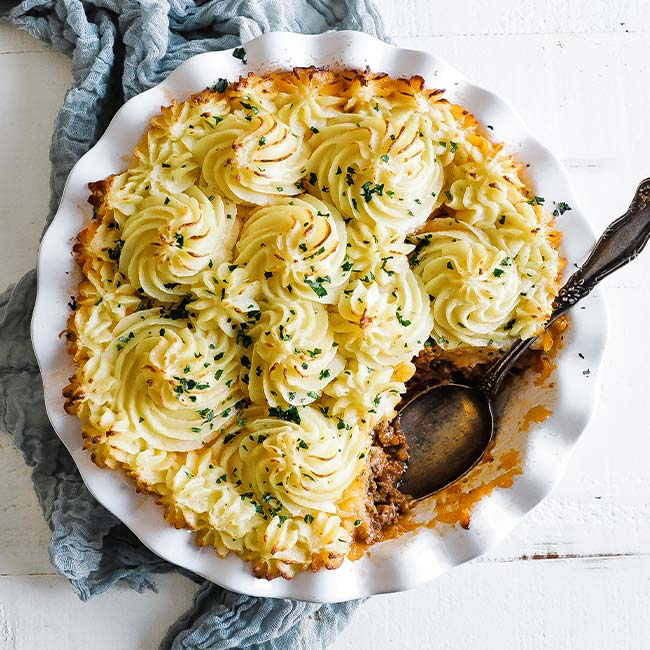

Shepards Pie

Description
This is one of my favorite recipes as of late, my fiancee first made this more me a few months ago and now it has become a staple of our dinner rotation
Indgredients
- 2 lbs of russet potatoes
- half a cup of milk
- quarter cup of butter
- salt and pepper
- 2 tablespoons oil
- 1 large onion
- 3 garlic cloves
- 2 large carrots
- 2 celery stalks
- 1.5 pounds of groudn beef
- 1 cup of beef broth
- 1.5 tablespoons tomato paste
- 1 tablespoon worcestershire sauce
Steps
- Place the potatoes in a pot and cover with cold water, turn the head on to high and bring to a boil. Cook for 13-15 minutes or unitl the potatoes are soft when stabbed with a fork
- Draine the potatoes with a strainer, then return to the pot. Add the milk, butter, salt and pepper and mash them up unitl they are smooth
- Preheat the oven to 400 degrees F. In a large saute pan, heat the oil over medium heat. Add the onion and garlic and sautee for a minute or unitl fragrant. Then add the diced up carrots, celery, and ground beef. Cook for roughly 8-10 minutes or until the meat is done.
- Drain some of the fat from the pan and then add the beef broth, tomato paste, worcestershire sauce, salt and pepper. Simmer for a few minutes so all the flavors can get to know one another
- Put the beef mixure into a oven safe dish and use a spatula to flatten the meat mixture into an even layer
- Put the mashed potatoes on top of the meat mixture and spread it flat to all the edges.
- Bake in the oven until the top of the potatoes are slightly golden, roughly 25-30 minutes. take out and enjoy